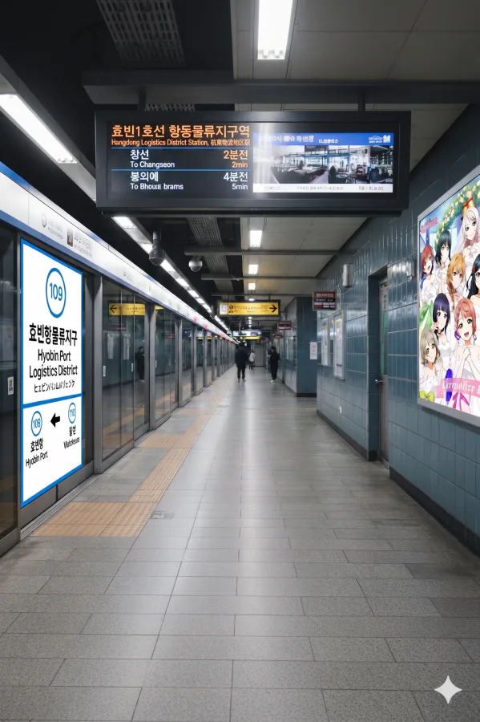
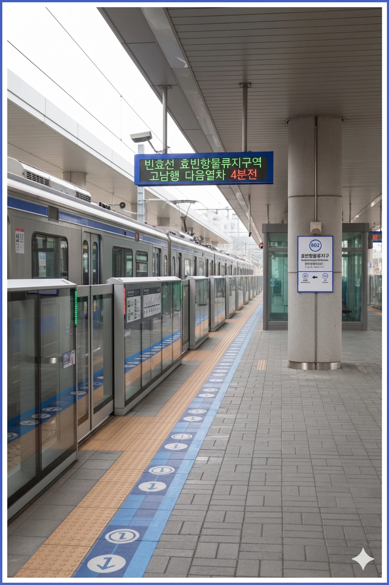

효빈 도시철도 1호선 109번 및 빈효선 광역전철 B02번. 효빈광역시 남구 항동1가 239-3지하 소재.
효빈광역시 남구 항동1가에 위치한 철도역이다.
|
1
빈
효빈항물류지구역 출구 정보
|
||
|---|---|---|
| 번호 | 주요 시설 및 방향 | 비고 |
| 1 | 효빈항물류지구 | |
| 2 | 7호선 분덕역 | |
| 3 | 효빈항물류지구 | |
| 4 | 7호선 효빈항동부역 | |

| 효빈항 ↑ | ||||
| 하 | ㅣ | ㅣ | ㅣ | 상 |
| ↓ 월 천 | ||||
| 상 | 1 효빈 도시철도 1호선 (상행 완행/급행 공용) | 창선 방면 (급행 정차) |
| 하 | 1 효빈 도시철도 1호선 (하행 완행/급행 공용) | 승남해수욕장 방면 (급행 정차) |

| ↑ 효빈항 | |||
| ㅣ | 하 | 상 | ㅣ |
| ↓ 동 신 | |||
| 상 | 빈 빈효선 광역전철 (상행 완행/급행 공용) | 효빈항 방면 (급행 정차) |
| 하 | 빈 빈효선 광역전철 (하행 완행/급행 공용) | 약산 · 궁하 · 천주 · 고남 방면 (급행 정차) |
| 효빈항물류지구역 이용객 통계 | |||
|---|---|---|---|
| 연도 | 1호선 | 빈효선 | 총합 |
| 2020년 | 5,200명 | 3,658명 | 8,858명 |
| 2021년 | 5,258명 | 3,699명 | 8,957명 |
| 2022년 | 6,114명 | 4,302명 | 10,416명 |
| 2023년 | 6,222명 | 4,378명 | 10,600명 |
| 2024년 | 6,332명 | 4,455명 | 10,787명 |
효빈 시내버스 노선이 주로 경유한다.
| 정류소명 | 방향 | 경유 노선 |
|---|---|---|
| 효빈항물류지구 | 순방향 | 59, 90, 492, 591, 592, 692 |
| 효빈항물류지구(건너편) | 역방향 | 95, 90-1, 492, 591, 592, 692 |